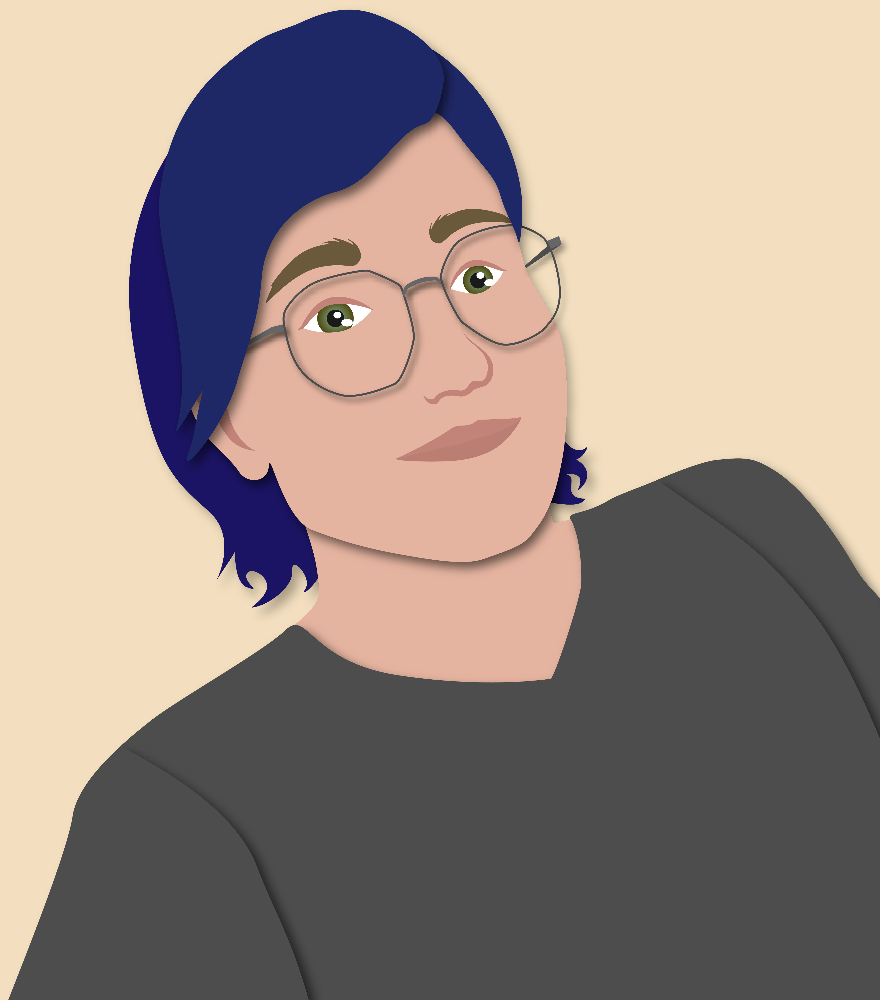

About the Author
Kai Evan Sterling has been writing stories since they were young. Although the Crown is Waiting series is their debut series, they've spent their childhood inventing worlds and characters. With a love of foreign language and a background in linguistics, they particularly love the richness that constructed languages can add to a world. However, their real passion in their stories is for deeply developed and diverse characters. As a nonbinary person, queer character representation is particularly important to them.
Outside of their writing, they love to bake and try new recipes. They also love animals and have almost always lived with at least one dog or cat, but often more than one. They also have done considerable volunteer work, primarily with the American Foundation for Suicide Prevention and local Pride organizations.